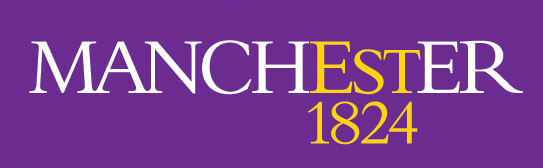
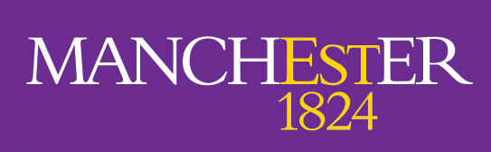
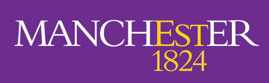
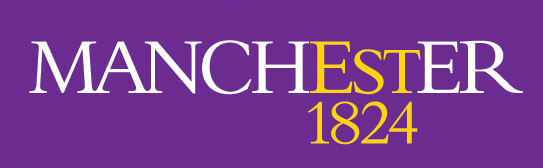

I grew up in Norwich before moving to the University of Bath to study for a Master's in Chemistry, graduating in 2020. During my undergraduate studies I completed a year-long industrial placement at GSK, Stevenage (medicinal chemistry) and a final year project under the supervision of Dr Alexander Cresswell working in the area of photoredox catalysis. In 2020 I joined the EPSRC-funded iCAT CDT at the University of Manchester, undertaking rotation projects in the groups of Professors Nick Turner and Michael Greaney. In July 2021 I commenced my PhD project under the supervision of Professors Igor Larrosa and Anthony Green, aiming to engineer enzymes for stereocontrolled C–C bond formation. Outside of the lab I enjoy running (road and trail), cooking and climbing.